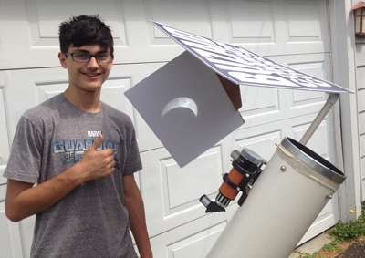
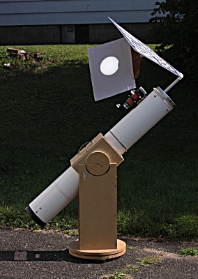
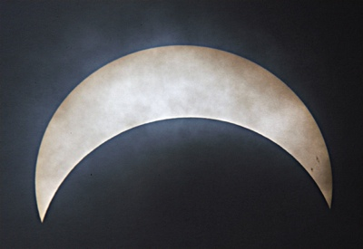
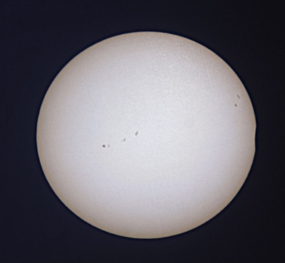

|
While Connecticut was quite a way from the track of totality, and we had some high, thin clouds, the show was still well worth watching from our driveway.
Gryffin and I used some PVC and coroplast to knock together an eyepiece projection rig for our 6-inch Meade Newtonian with about an hour to go before first contact. The projected image was just over 6 inches in diameter, and allowed some enjoyable viewing. Note the prominent sun spots. We had a couple friends over, and all felt that watching the clouds scurry across the partial disk was a great addition to the spectacle. Everyone grabbed a few seconds of video with their phones. You can see mine at the end of the page. Note that the last two images are reversed, due to our scope's optics, and yes, the color is enhanced. The sun's image looked pretty much pure white. Click any image or the video for a larger view. Thayer | |
|

You know you must be doing something right when you get a teenager's approval! |

Here you can see the overall view of our telescope, along with the sun a minute or two before the eclipse was over. |
|---|---|
|

Naturally the clouds got thick right around our maximum occultation of 69 percent, but I did manage to get this image within 30 seconds or so of my iPhone alarm sounding. You can see some of the prominent sun spots in the right arm. |

Just the last little touch of occultation remains at about 3 o'clock. |
|
A short video showing the clouds in front of the partially eclipsed sun. | |